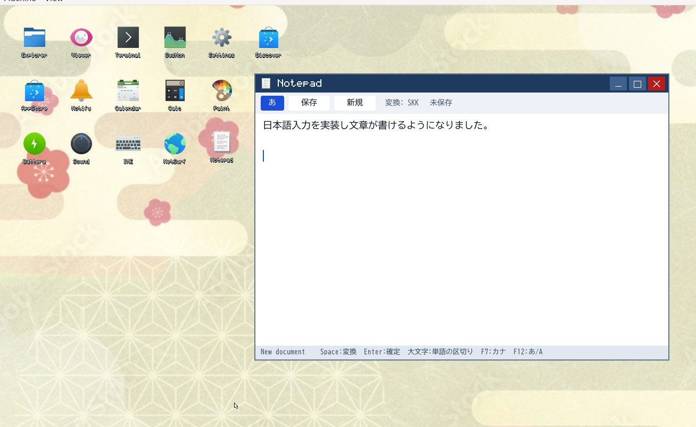

Tamazusa OS (玉梓)
教育を目的とした、T-Kernel 2.0 ベースの64ビット OS。POSIX/Linux 互換でソフトウェア資産を育てる。
An educational 64-bit operating system built on T-Kernel 2.0, with POSIX/Linux compatibility so that software can grow on it.
画面Screenshot

ダウンロードDownload
- これは動作確認用のプレビュー版です。製品としての品質や互換性は保証しません。 This is a preview for testing. No warranty; not production quality.
- 動作確認は仮想マシン(QEMU)が中心です。実機での確認は十分ではありません。実機で試す場合は、大切なデータのあるディスクには触れず、自己責任で行ってください。 Tested mainly in QEMU; real-hardware testing is limited. If you try real hardware, keep it away from disks with important data, at your own risk.
- POSIX は一部のみの実装で、準拠を主張するものではありません。カーネルのタスク機構は仮の実装で、リアルタイム性は測っていません。 Only part of POSIX is implemented, with no conformance claimed. The kernel’s task mechanism is a provisional implementation, and real-time behavior has not been measured.
アーキテクチャ別 / By architecture
| 対象Target | 状況Status | 入手先Get it |
|---|---|---|
| x86_64 | プレビュー版 v0.1.0(2026年10月31日)。QEMU で ISO から起動し、デスクトップまで動作。 Preview v0.1.0 (31 Oct 2026). Boots from the ISO under QEMU to the desktop. | リリースページ / Release page ISO |
| AArch64 | カーネルは QEMU で動作確認。公開リリースはまだありません。 Kernel verified on QEMU. No public release yet. | 準備中 / Coming later |
| RISC-V64 | 公開リリースはまだありません。 No public release yet. | 準備中 / Coming later |
| LoongArch64 | カーネルを試作し、QEMU で動作確認。公開リリースはまだありません。 Kernel prototype, verified on QEMU. No public release yet. | 準備中 / Coming later |
新しいリリースは GitHub の Releases に掲載します。 / New releases will be posted on GitHub Releases.
x86_64 v0.1.0 のファイル / Files
| ファイルFile | 内容What it is | サイズSize | SHA-256 |
|---|---|---|---|
tamazusa-os-20261031.iso |
起動用イメージBootable image | 99,418,112 B | c8cc3e5178e11a1c62129a69ce1a5c66e1960c774326de147f81d6177edb206e |
tamazusa-os-src-20261031.tar.xz |
ソースの束(大きなフォント等を除く)Source bundle (large fonts etc. excluded) | 27,049,700 B | 14e3a5cae37aeb5a74bd0f60571aa7be688b7bab384642d265dd512d8db0eb44 |
tamazusa-os-gpl-sources-20261031.tar |
同梱の GPL / LGPL ソフトウェアの対応ソースとライセンス文Corresponding source and licenses of bundled GPL/LGPL software | 33,433,600 B | c6c7423a7e062d1177947b40ce9aa6b73439bb878d990cc01a89c7ae17db584f |
tamazusa-os-qt-relink-20261031.tar.xz |
改変した Qt に再リンクするための一式(Qt 6.8.0 は LGPL-3.0)Files to relink against a modified Qt (Qt 6.8.0 is LGPL-3.0) | 14,370,520 B | 0f61498242c2c0cfd9f306c29f5968125f1b150c44e5a8038a4f7f655f1607f7 |
certutil -hashfile ファイル名 SHA256、Linux / macOS は sha256sum ファイル名(macOS は shasum -a 256 ファイル名)です。
Verify your download: compute the SHA-256 and compare it with the value above. On Windows use certutil -hashfile FILE SHA256; on Linux use sha256sum FILE; on macOS use shasum -a 256 FILE.
ライセンス / Licenses
- 作者が書いたコードは MIT ライセンスです。 Code written by the author is under the MIT License.
- 同梱の第三者ソフトウェアは、それぞれ元のライセンスに従います(GPL、LGPL、SIL OFL など)。T-Kernel 2.0 由来の部分は T-License 2.2 に従います。 Bundled third-party software keeps its own licenses (GPL, LGPL, SIL OFL and others). Parts derived from T-Kernel 2.0 follow T-License 2.2.
- GPL / LGPL ソフトウェアのソースは、上の
gpl-sourcesで提供しています。詳しくはリポジトリのNOTICEとSOURCE_OFFER.txtを参照してください。 Source for GPL/LGPL software is provided ingpl-sourcesabove. SeeNOTICEandSOURCE_OFFER.txtin the repository.
概要About
主流の BTRON との違いHow it differs from mainstream BTRON
| 観点Aspect | 仕様重視の BTRON 系実装Specification-first BTRON implementations | Tamazusa OS |
|---|---|---|
| 目的Purpose | 仕様の純度と決定的な動作Specification purity and deterministic behavior | 教育教材とソフトウェア資産の成長Teaching material and growth of a software ecosystem |
| カーネル以外の層Layers above the kernel | BTRON の GUI・アプリ層を備えるKeep the BTRON GUI and application layers | 旧 BTRON の GUI・アプリ層は外し、POSIX/Linux 互換層に置き換えLegacy BTRON GUI and application layers removed; replaced by a POSIX/Linux compatibility layer |
| ソフトウェアSoftware | BTRON 向けに作るWritten for BTRON | musl libc ベースの x86_64 ELF をそのまま実行(BusyBox、Python 3、NetSurf、Qt Quick 6 など)Runs musl-based x86_64 ELF binaries as they are (BusyBox, Python 3, NetSurf, Qt Quick 6, etc.) |
| POSIX の範囲POSIX scope | — | 全関数の実装を目標にせず、実用 OSS が動くことを基準に段階的に実装。未対応は標準どおり ENOSYS を返すDoes not aim at every function; implements in stages by what real-world OSS needs. Unsupported calls return the standard ENOSYS |
| デスクトップDesktop | BTRON ネイティブのデスクトップNative BTRON desktop | 自作の Wayland コンポジタ上で Qt Quick 6 のデスクトップ(日本語 IME、ファイラー、メモ帳、PDF ビューア)Qt Quick 6 desktop on a custom Wayland compositor, with a Japanese IME, file explorer, notepad and PDF viewer |
| ストレージStorage | 超漢字などの独自形式を扱う実装もあるSome handle native formats such as Cho-Kanji volumes | FAT32 / FatFs で Windows や Linux とデータを交換。超漢字ボリュームは対象外Exchanges data with Windows and Linux via FAT32 / FatFs; Cho-Kanji volumes are not a target |
比較の出典 / Source of the comparison: M. Sokhatsky, “Hideyuki Kishida’s Educational 64-bit Tamazusa OS and 5HT’s B-System: A Rigorous Comparative Audit…”, Nov. 1, 2026 — MSX BTRON Research.
特徴Features
x86_64 / AArch64 / LoongArch64
64ビット化した T-Kernel 2.0 を共通の核とし、LoongArch64 は試作段階。x86_64 では4階層ページング、プロセスごとの独立したアドレス空間、動的 ELF ローダーを備える。
A 64-bit T-Kernel 2.0 as the common core; LoongArch64 is a prototype. On x86_64 it has 4-level paging, a separate address space per process and a dynamic ELF loader.
POSIX OSS Gateway
BusyBox と Python 3 が動作。段階的な4つのマイルストーンで実用 OSS への対応を進めている。
BusyBox and Python 3 run today. Compatibility grows through four staged milestones aimed at real-world OSS.
Wayland デスクトップ
自作の Wayland コンポジタと Qt Quick 6 のデスクトップ。日本語入力(SKK 方式)付き。
A custom Wayland compositor and a Qt Quick 6 desktop, with Japanese input (SKK-style).
T88-Basic
N88-BASIC 互換の BASIC を搭載。ゲーム、グラフィック、音楽が動作。
An N88-BASIC compatible BASIC, with games, graphics and music working.
現在の状況Current status
- QEMUx86_64、AArch64、LoongArch64(試作)は QEMU 上で動作確認。実機での起動は未検証。 x86_64, AArch64 and LoongArch64 (prototype) are verified on QEMU. Booting on real hardware is not yet verified.
- 実験中 / Experimentalマルチコア(SMP)は QEMU 上の実験段階で、既定は単一コア。 Multicore (SMP) is experimental on QEMU; single-core is the default.
- 動作 / WorkingBusyBox、Python 3、NetSurf、Qt Quick 6 デスクトップ。ソフトウェア描画。 BusyBox, Python 3, NetSurf and the Qt Quick 6 desktop, rendered in software.
- 未完 / Not yetGPU ドライバは試作段階で未動作。WPE WebKit はビルド済みだが、カーネルのスレッド対応待ち。 GPU drivers are prototypes and not operational. WPE WebKit is built but waits for kernel thread support.
- 教育用 / Educationalタスクディスパッチャは教育用に簡素化されており、リアルタイム性は計測していない。 The task dispatcher is simplified for teaching, and real-time characteristics have not been measured.
今後の方向Roadmap
- 言語処理系の追加(C/C++、Python、Ruby など)と Wayland 上での動作 More language runtimes (C/C++, Python, Ruby, etc.) running on Wayland
- WPE WebKit の動作(カーネルのスレッド実装が前提) Running WPE WebKit, which depends on kernel thread support
- マルチコア(SMP)の安定化 Stabilizing multicore (SMP)
- Windows ソフトウェア資産の移植を支援する仕組みの検討 Tooling to help port Windows software assets
- POS、会計、貿易、基幹業務ソフトなどの業務分野 Business domains: POS, accounting, trade and core business systems
- RISC-V への移植の検討 Considering a RISC-V port